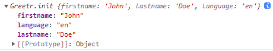

來打造一個 Framework/Library (一)
在之前的 深入了解原始碼: jQuery 課程中，從 jQuery 的原始碼中，了解到許多建立 Framework 和 Library 的技巧，在接下來的課程中將打造一個屬於我們自己的 Framework/Library !
Requirement
不論是在開發功能或是這次將實作的 Framework/Library，在開發前先釐清需求是最重要的，而非一股腦地動手寫程式。
在過去的課程中，作者將打招呼 greeting 作為許多觀念的範例，接下來的系列課程也不例外，我們稱這個 Library 為 greetr。
這個 Library 將會有以下幾個功能:
- 給定姓
firstname、名lastname和選擇語言optional language後，可以使用兩種正式formal與非正式informal的打招呼方式 - 支援英文
English與西班牙文Spanish，也許我們再加上中文Chinese - 是一個可重複使用 (reusable) 的 Framework/Library，安裝的人可以直接使用，而不會干擾到它們自己的程式碼
- 就像 jQuery 一樣，可以直接輸入
$()來使用，我們也希望直接輸入G$()來使用 - 可支援 jQuery，並將文字直接輸出到 HTML 上
HTML
首先來了解一下專案架構，我們會有一個基本的 HTML 檔案來引入三支 JavaScript 檔案
- jquery.js: 我們會讓新的 Library -
greetr來支援它，所以先將它引入 - greetr.js: 這就是我們將打造的 Library 程式碼
- app.js: 這個基本專案的
JS程式碼，將會在這裡使用 jQuery 與greetr
1 | // index.html |
Structuring Safe Code
在過去的課程中，我們有提到如果要建立一個不干擾全域環境的 Execution Context，我們需要透過 IIFE 來將所有程式碼包起來，另外，因為我們還希望它可以支援 jQuery，所以會將 window 和 jQuery 物件 - $ 作為參數傳入
1 | // greetr.js |
物件與其原型
在一開始的需求有提到，在使用這個 Library 時，我們希望模仿 jQuery 的作法，讓使用者不須使用 new 就可以取得 greetr 的物件，那麼我們該怎麼做呢 ?
1 | // app.js |
首先為了不需使用 new 就能建立，我們需要在使用者呼叫函式時，回傳另一個透過 new 建立的 Function Constructor，
1 | (function (global, $) { |
建立函式預設值
接著，我們需要提供這個函式一些預設的參數 firstname、lastname 與選擇性參數 language; 為了避免後續因執行環境改變 this 的值，所以先將 this 的值透過一個變數 self 存起來，接著將 this 的屬性賦予傳進來的參數，而因為 language 我們希望即使不帶入也有預設值 en ，因此透過 || (OR operator) 來給定預設值。
1 | // greetr.js |
建立原型 Prototype
還記得在之前的課程 function-constructors-and-prototype 的課程中有提到，當函式被建立時，會有一個名為 prototype 的屬性，而如果被作為 Function Constructor，透過 new 來建立的物件就會將其 prototype 指向函式的 prototype 屬性 ; 但因為先前為了讓使用者不須在使用 new 來建立物件，所以我們新增了另一個 Function Constructor，因為要將這兩個函式的 prototype 指向相同一個物件 Greetr.init.prototype = Greetr.prototype;。
1 | // greetr.js |
提供 G$ 使用
同樣回到一開始的需求，為了讓使用者可以像 jQuery 透過 Greetr 或縮寫 G$ 來使用，我們必須將我們想提供的變數綁定到全域環境上，這時候就可以透過傳進來的 window (global) 來達到這個目的了。
1 | (function (global, $) { |
Summary
截至目前為止，我們所建立的 Library 已經可以這常使用了，透過呼叫 G$ 帶入參數就可以得到一個我們所建立的物件了，而目前 prototype 還只是一個空物件，接下來將會在其中加入更多的功能供使用。
1 | // app.js |
